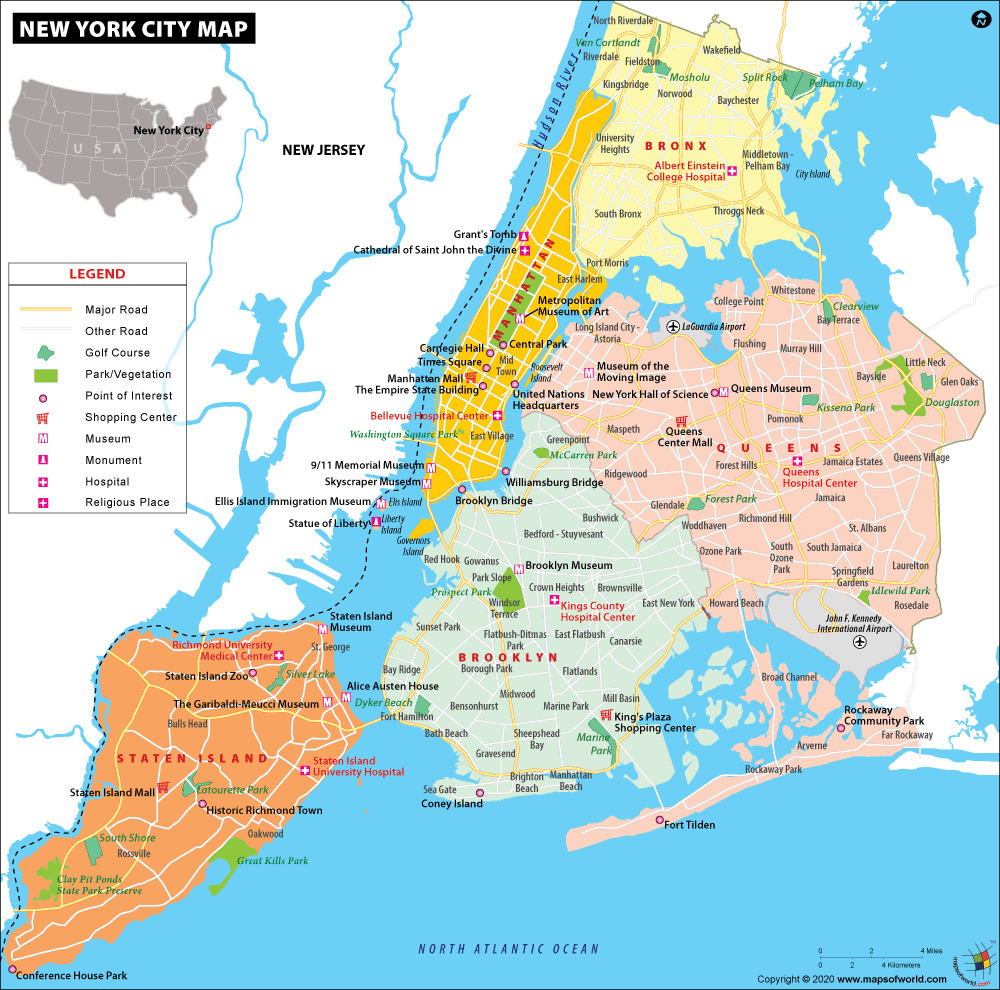
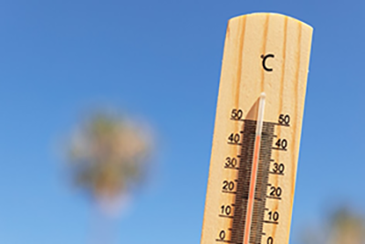
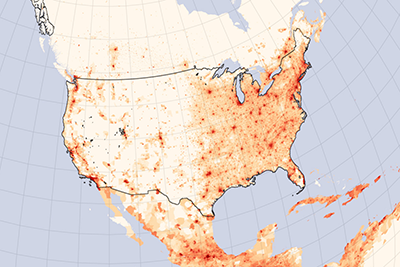

We're looking at how water and greenery can help New York City beat the heat.
Our team connects open data with urban design to imagine a cooler, healthier city.
New York City is the largest city in the United States and one of the most influential metropolises in the world. The city is made up of five boroughs—Manhattan, Brooklyn, Queens, the Bronx, and Staten Island—and is home to more than 8 million people. Known for its cultural diversity, iconic landmarks such as the Statue of Liberty and Central Park, and its thriving arts, finance, and technology industries, New York is a global center of activity and innovation. Built along rivers, harbors, and expansive green spaces, New York is a city where nature and urban life intersect. From its internationally recognized skyline to neighborhood gardens and public parks, NYC offers a unique urban experience and continues to serve as a stage for culture, innovation, and sustainable development. |
 |
| resource: https://www.mapsofworld.com/ |
Background
In New York City, an extreme heat event, otherwise known as a heat wave, is defined as the apparent temperature of at least two consecutive days reaching 95 degrees Fahrenheit (°F), or one or more days reaching 100°F.
Prolonged exposure in heat can cause heat rashes, heat stress, heat exhaustion, heat stroke, and even death. In fact, extreme heat is the leading cause of climate-related deaths in New York City and across the United States.
Objective
We explore how various environmental and social factors contribute to communities’ vulnerability to heat, and apply different strategies to help NYC stay cooler and healthier. Our goal is to design sustainable, equitable measures based on scientific data that protect vulnerable neighborhoods from extreme heat effectively.
Government's solution
The NYC Mayor’s Office of Climate & Environmental Justice (MOCEJ) currently undertakes 4 primary strategies to mitigate the impact of extreme heat. However, these measures often fall short of achieving their intended outcomes.
Tree and Green space
|
Spray Caps
|
Cooling Assistance (HEAP Program)
|
Cooling Centers
|
Our solution
Our project takes a data-informed approach to strengthening New York City’s resilience to extreme heat. By merging spatial datasets and socio-economical factors, we seek to pinpoint underserved neighborhoods and optimize the allocation of resources. Our proposed solutions aim to enhance the effectiveness of government initiatives and take into consideration community input to support climate equity.
|  | ||
|  |